Math examples
Every example below is rendered by the actual compiler — the SVGs
are pulled straight from packages/core/__fixtures__/math/
and are byte-stable across re-renders. Click any card to view the
full spec.
![Sine wave from y = sin(x) sampled on [-2π, 2π]](./sine-wave.svg)
Sine wave
y = sin(x) sampled directly in the compiler — no
CSV, no linspace. Just declare the domain and
the expression.

Lissajous curve
Same shape, now with a parameter block plus
xExpr / yExpr. Draws arbitrary
parametric curves.

Vector field
A new mark in the registry. Arrows emit through a single
<marker> in <defs> —
self-contained SVG.

Animated trajectory
Parametric data composes with scrub animation — zero compiler changes. The thesis Math Phase 1 set out to validate.

Pen-draw spiral
The new pen-draw effect (Math Phase 2 / Track A2). A SMIL
<animate> on
stroke-dashoffset traces the curve over
duration_ms — zero JavaScript.